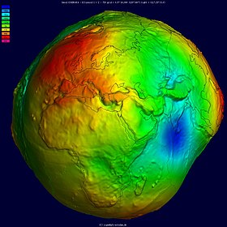
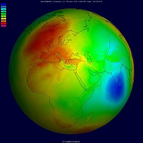
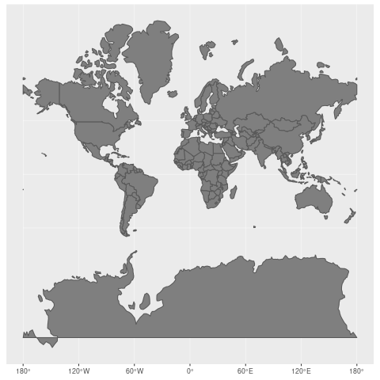
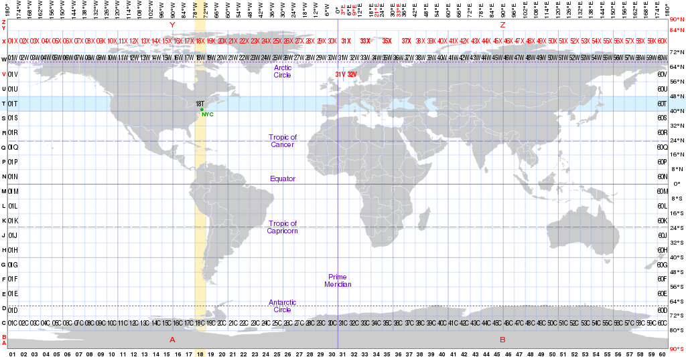

Projection
Projection is important in a remote sensing image. Different projections may result in totally different results. Here is a clip from The West Wing which directly shows the huge difference between projections.
Geoid（大地水准面） & Reference Ellipsoid（参考椭球体）
The real situation of Earth surface is quite complex, using Earth itself as the reference system is not realistic.
The geoid is the shape that ocean surface would take under the influence of the gravitational attraction and Earth’s rotation, if other influences such as winds and tides were absent. Mathematically, geoid is a continuous but irregular closed surface that is everywhere orthogonal to the plumb line passing through it. The distribution of Earth’s mass, especially the heterogeneity of mass distribution in the outer layer, makes the shape of geoid particularly complex. In the region of sudden density change, the geoid curvature shows discontinuity. Therefore, the geoid is not an analytic surface.
Using reference ellipsoid to approximate the shape of geoid is a solution. Take WGS84 reference ellipsoid as an example, Its semi-axis is located on the equatorial plane and its length is about 6,378,137 meters. The short axis points towards the pole and is about 6,356,752 meters long, about 21 kilometers shorter than the long axis. Relative to the WGS84 ellipsoid, the geoid undulation ranges from the highest point to the lowest point from less than 200 meters. Although the geoid is an irregular curved surface, it is smoother than the real topographic surface, which has an elevation difference of nearly 20 km.


Geoid undulation, or geoid height, is the distance between a point on the geoid and its corresponding position projected to the reference ellipsoid along the normal direction. The positive maximum of the geoid height occurs in New Guinea, which is +85.4 m. The negative extreme occurs in southern India with a value of −107.0 m.
Coordinate System（坐标系）
With reference ellipsoid, coordinate system can be defined to describe the position and measure the distance. Using the same corrdinate system can guarantee the same position and measurement results. Usually, there are two kinds of coordinate system: Geographic coordinate systems（地理坐标系） and Projected coordinate systems（投影坐标系）
Geographic coordinate systems
A geographic coordinate system is usually composed of longitude, latitude and altitude, which can indicate any position on Earth.
Projected coordinate systems
Map projection is the way to display a 3D geographic coordinate systems on a 2D Map. Obviously, the transform from 3D to 2D inevitably leads to distortion, but different projections have different distortions. Common projections are Platte Carre and Mercator. For Mercator projection, the size distortion gets worse with higher latitudes, and the poles get pushed to infinity, so the Mercator projection doesn’t show the polar regions.

Relationship between geoid, reference ellipsoid, spheroid and datum（基准面）
geoid: the surface of the earth gravity field. –> [Approximate] –> Reference ellipsoid. –> [change from 2D to 3D] –> Spheroid. –> [built on top of spheroid and include local elevation] –> Datum.
This website clearly explains.
EPSG
EPSG (European Petroleum Survey Group) is responsible for maintaining and publishing the coordinates reference system dataset parameters, as well as the coordinate transformation description. Different combinations of the existing ellipsoid and projection coordinate system correspond to different EPSG code, which represents the specific information such as the reference ellipsoid, unit, coordinate system and projection. The EPSG maps every part of the world, but the maps are different due to different coordinate systems.
Several widely used coordinate systems:
| Name | Unit | Geodetic CRS | Datum | Scope |
|---|---|---|---|---|
| EPSG:4326, WGS84 | degree | WGS84 | World Geodetic System 1984 ensemble | Horizontal component of 3D system |
| EPSG:3857, Pseudo-Mercator | metre | WGS84 | World Geodetic System 1984 ensemble | Web mapping and visualisation. |
| EPSG:3031, Antarctic Polar Stereographic | metre | WGS84 | World Geodetic System 1984 ensemble | Antarctic Digital Database and small scale topographic mapping. |
| EPSG:3413, NSIDC Sea Ice Polar Stereographic North | metre | WGS84 | World Geodetic System 1984 ensemble | Polar research. |
UTM
UTM (Universal Transverse Mercator) is a map projection system for assigning coordinates to locations on the surface of the Earth. It ignores altitude and treats the earth as a perfect ellopsoid. It divides earth into 60 zones and projects each to the plane as a basis for its coordinates.
Most zones in UTM span 6 degrees of longitude, and each has a designated central meridian. The scale factor at the central meridian is specified to be 0.9996 of true scale for most UTM systems in use.

Several ways to reproject
There are several ways to reproject, you can either use gdal command line or gdal python API or rasterio.
1 | # from command line [reproject input.tif to EPSG:4326 and save as output.tif] https://www.osgeo.cn/gdal/programs/gdalwarp.html: |
Reference / useful websites:
https://github.com/penouc/blog/issues/1
https://en.wikipedia.org/wiki/Geoid
https://www.cnblogs.com/E7868A/p/11460865.html
https://zhuanlan.zhihu.com/p/46958274